@Tasnimnews_Fa
📝 原文: Cinema Sakoo'eh Damages During Enemy American-Zionist Attacks on Iran Near Shahid Square
🇨🇳 译文: 敌方美国犹太复国主义者袭击沙希德广场附近的伊朗，Sakoo'eh 电影院遭到破坏

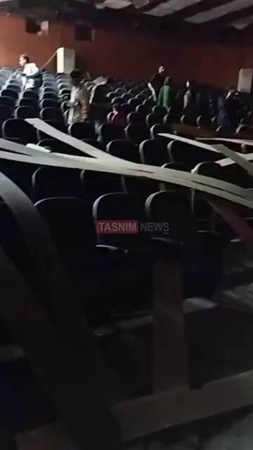
🕒 2026-05-06T10:51:48+00:00
| 来源 | 旧窗口内数量 | 本次新增 | 本次淘汰 | 当前窗口内共有 |
|---|---|---|---|---|
| 推文 + Dawn 新闻 | 0 | 42 | 0 | 42 |
| ARY News | 0 | 10 | 0 | 10 |
注：淘汰数 = 旧窗口内数量 + 本次新增 - 当前窗口内共有
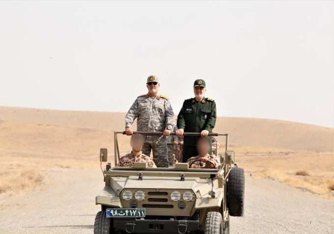



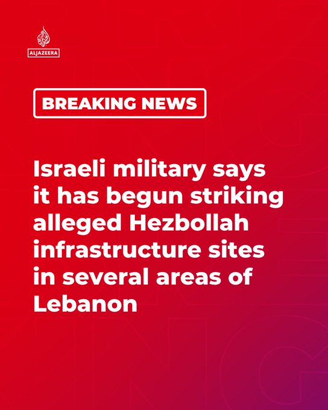

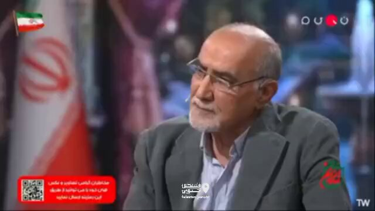
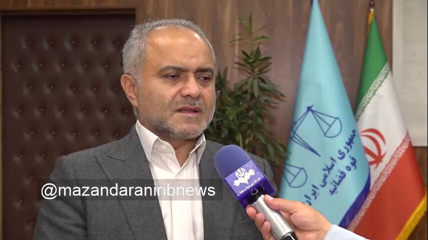
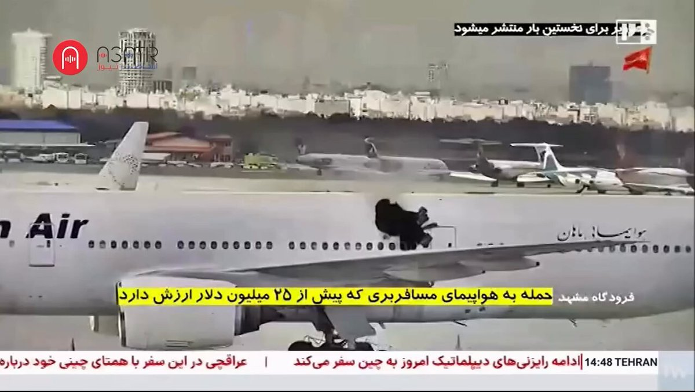
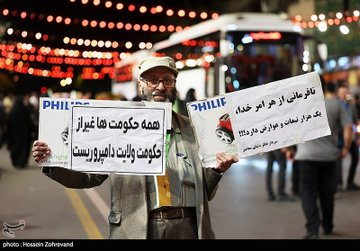
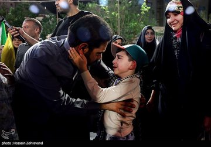
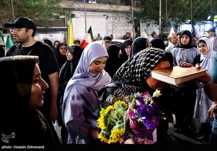
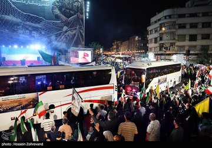
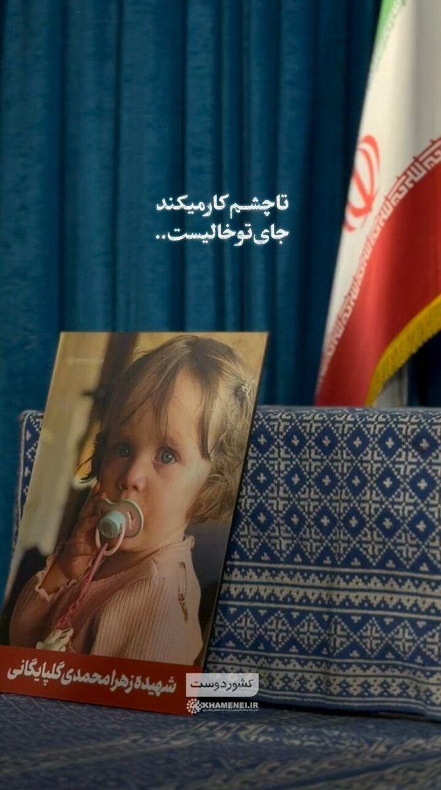
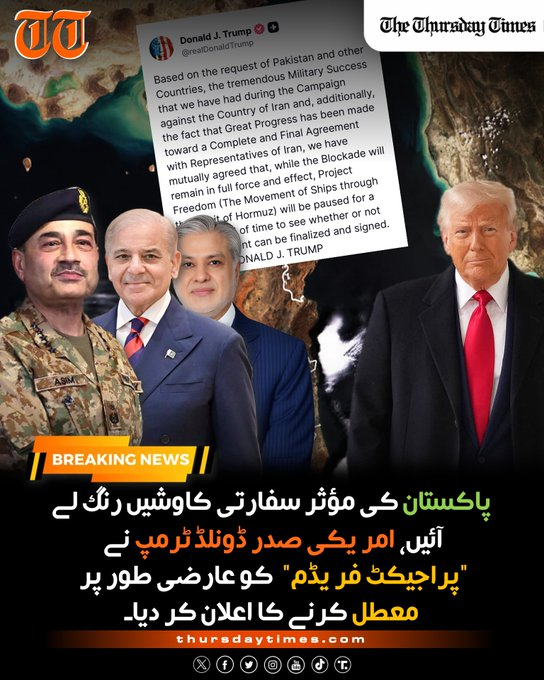
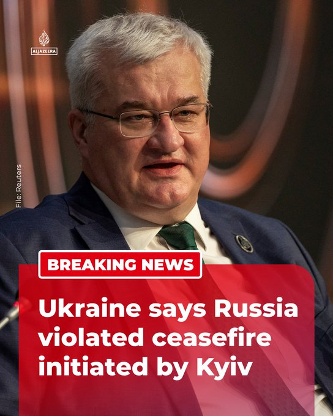

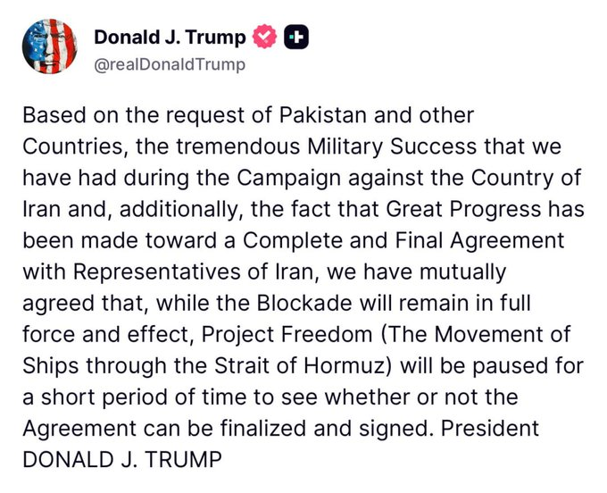


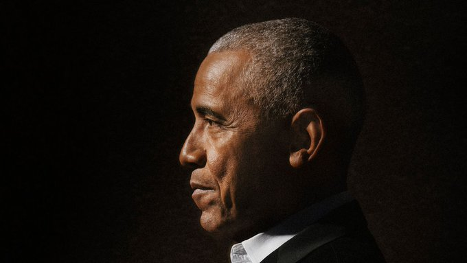
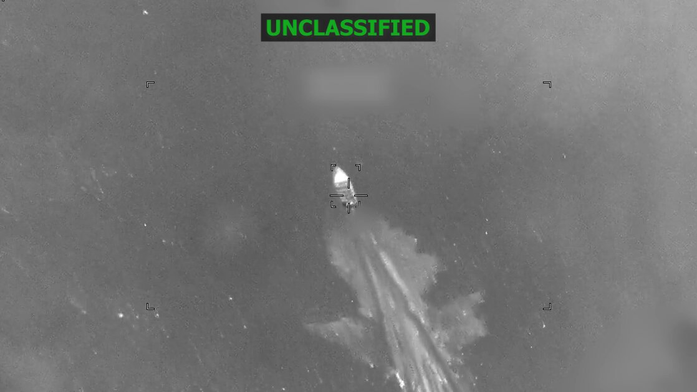

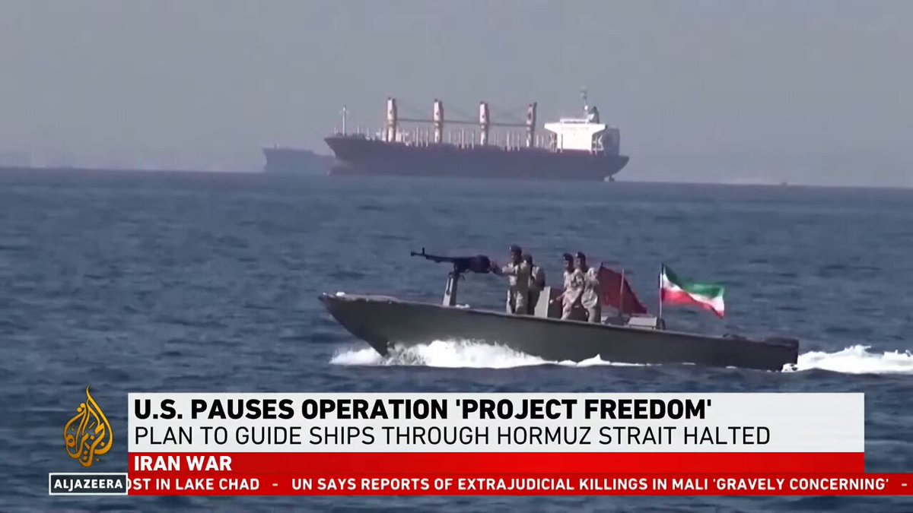